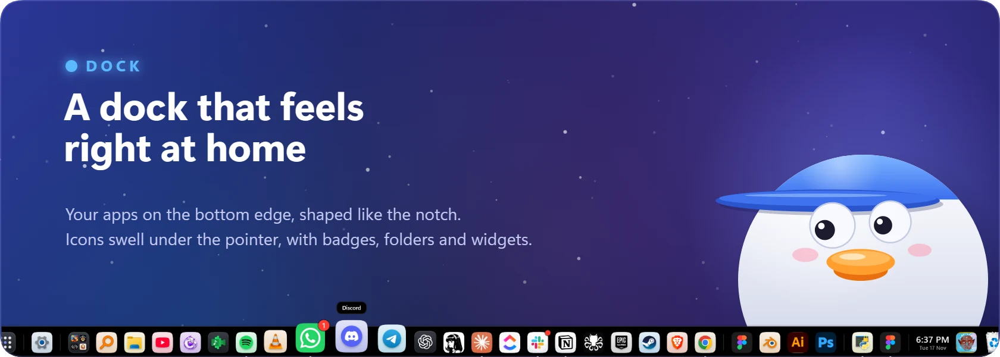
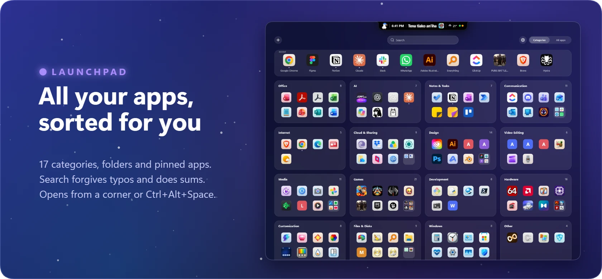
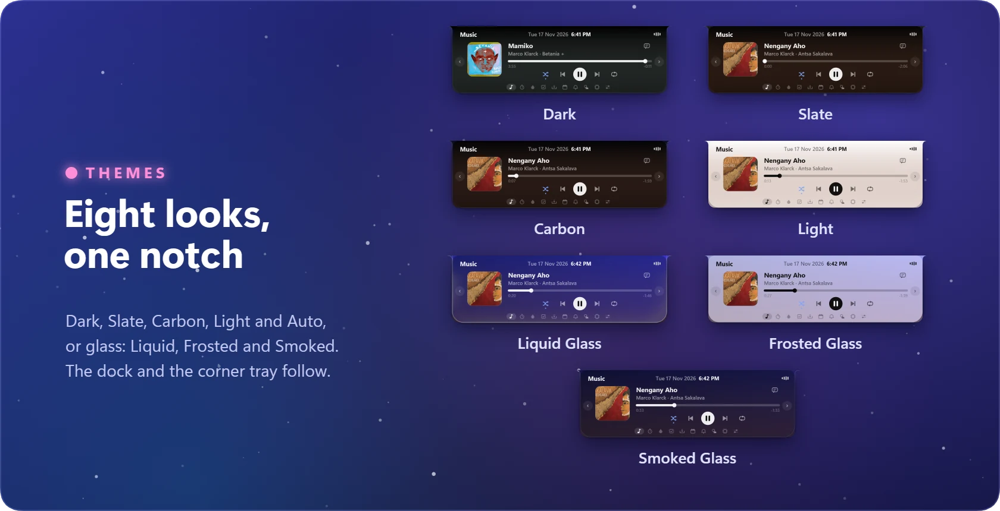
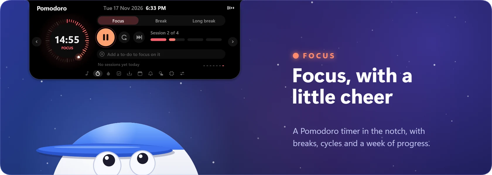
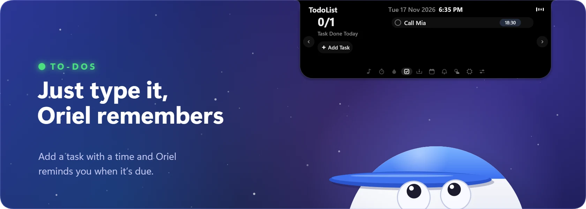
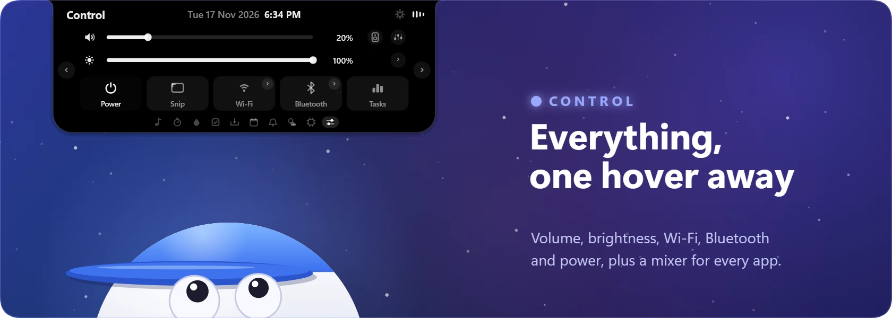
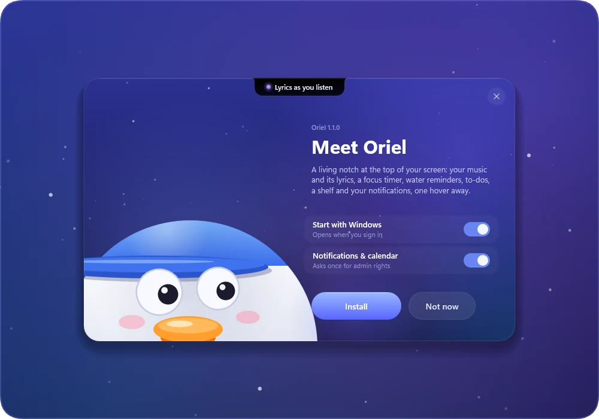

The top of your screen,
alive.
Oriel is a small notch that lives at the top of Windows. Hover it and it opens: your music and its lyrics, a focus timer, to-dos, your calendar and quick controls. Move away and it tucks back in.
More than a notch.
A dock on the bottom edge, all your apps in a Launchpad, and eight looks to choose from.



Everything, one hover away.
Pages you flip through with the wheel or the arrows, each one built for a glance.



Music and lyrics
Spotify, your browser or any player, with synced lyrics that light up as they're sung.
Water
A daily goal, gentle reminders through the day, and a streak to keep.
Calendar
Today's agenda and the month, from your Windows accounts or any iCal link.
Notifications
Your Windows notifications in one place, and Phone Link calls you can answer on the PC.
System
Processor, graphics, memory and each drive's free space, at a glance.
And a duck
It dances to your music, nods off when things are quiet and keeps you company.
Installs in seconds.
No admin rights, no clutter. Oriel installs for you only and updates itself.
- Download the setup with the button above.
- Open it. Windows may say Windows protected your PC because the setup isn't signed yet: click More info, then Run anyway.
- Choose your options and click Install.
- Move your pointer to the top of the screen. Right-click the notch for Settings.
Rather skip the warning? Get Oriel from the Microsoft Store, listed as Oriel Notch. Microsoft signs it and the Store keeps it up to date.

🔒 Stays on your PC
Settings, tasks and history are plain files in your user folder. No account, no analytics, no ads.
🌐 Online only when needed
Lyrics, weather, public holidays, the calendar links you add, and Spotify if you connect it.
📄 In plain words
Read the privacy policy and the license.
Say hi to Oriel.
Free for Windows 10 and 11.